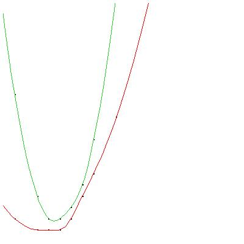
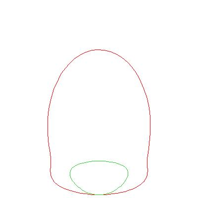

Code
σ22k ∩ [grass(4,4+k,σ)]
Letterio Gatto's code in terms of degrees of schubert varieties.
For comparison: schubert in maple
/
schubert2 in Macaulay2
/
In Macaulay2 without the overhead of the whole of schubert2
/
Todo: Implement Gatto's ideas as a new engine for schubert.
ELMS r=10, 11, 12


Jan-Magnus Økland